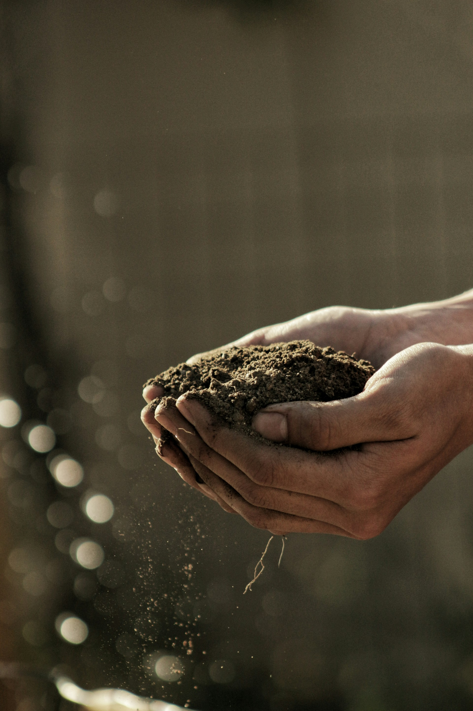
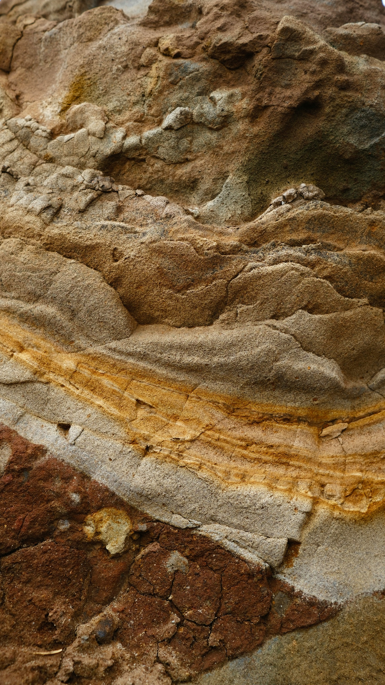

Building better agricultural systems from the ground up.
Productivity begins with understanding the land and building systems that allow it to perform over time.
The Jubesa Journal
Stories, perspectives and insights from the fields, markets and opportunities shaping what comes next.
Featured
Tanzania has enormous agricultural potential. The opportunity is not only in what we grow, but in how we develop productive systems around the land, the people and the markets they serve.
Selected stories
Productivity begins with understanding the land and building systems that allow it to perform over time.

Beneath the surface lies a resource base with the potential to support industries, communities and long-term development.

Production creates potential. Strong connections between producers and markets turn that potential into value.

Sustainable growth begins by thinking beyond the next season, the next transaction and the next quarter.

Different crops create different opportunities. A diverse agricultural base can strengthen resilience and market access.

Resource development is ultimately about more than extraction. It is about the value created around the resource.
Explore the journal
Jubesa Farm Tanzania Limited
We continue to explore the ideas, industries and opportunities that can contribute to a more productive Tanzania.